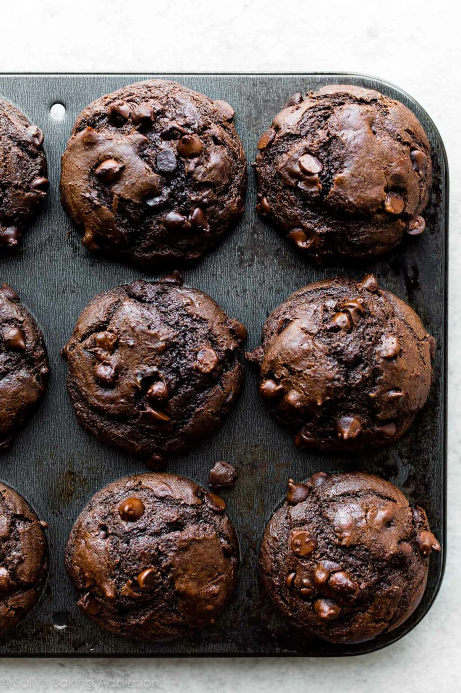

Moist Chocolate Muffins

Description
These double chocolate muffins are incredibly rich, mega chocolate-y, and loaded with chocolate chips in every single bite. Sour cream helps guarantee a soft and moist muffin that has a denser texture than chocolate cupcakes.
Ingredients
- 2 cups (250g) all-purpose flour (spoon & leveled)
- 1/2 cup (41g) unsweetened natural cocoa powder
- 1 teaspoon baking soda
- 1/2 teaspoon salt
- 1 and 3/4 cups (315g) semi-sweet chocolate chips
- 2 large eggs, at room temperature
- 3/4 cup (185g) full fat sour cream or plain yogurt, at room temperature
- 1/2 cup (120ml) vegetable oil
- 1/2 cup (120ml) whole milk, at room temperature
- 1 and 1/2 teaspoons pure vanilla extract
Directions
- Preheat oven to 425°F (218°C). Spray a 12-count muffin pan with nonstick spray or use cupcake liners. This recipe yields about 14 muffins, so prepare a second muffin pan in the same manner or bake in batches and reserve leftover batter at room temperature for when the first batch is done.
- Whisk the flour, sugar, cocoa powder, baking soda, salt, and chocolate chips together in a large bowl. Set aside.
- Whisk the eggs, sour cream, oil, milk, and vanilla extract together until combined. Pour wet ingredients into dry ingredients and fold together with a rubber spatula or wooden spoon until completely combined. (Batter is quite thick, so I recommend a spatula or spoon over a whisk.) Avoid overmixing. The batter will be thick and sticky.
- Spoon the batter into liners, filling them all the way to the top. Bake for 5 minutes at 425°F then, keeping the muffins in the oven, reduce the oven temperature to 350°F (177°C). Bake for an additional 15-16 minutes or until a toothpick inserted in the center comes out clean. The total time these muffins take in the oven is about 20-21 minutes, give or take. (For mini muffins, bake 13-14 total minutes at 350°F (177°C) the whole time.)
- Cool muffins for 10 minutes in the pan, then transfer to a wire rack until ready to eat
- Cover leftover muffins and store at room temperature for 5 days or in the refrigerator for 1 week.
HOME